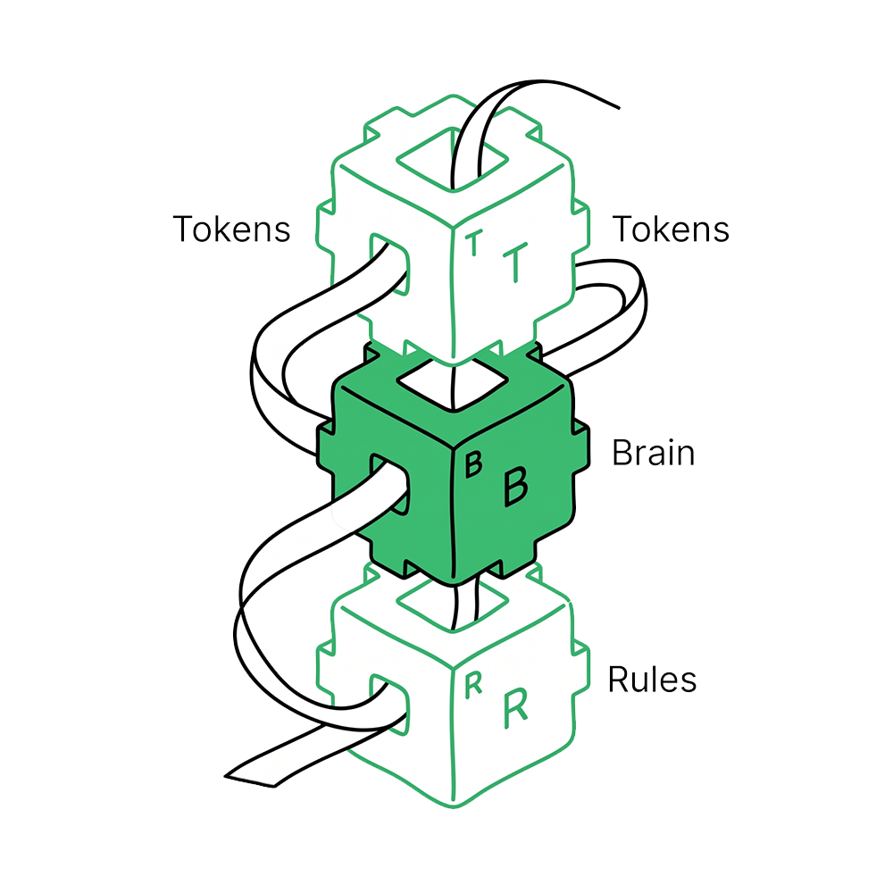

Context Grammar — なぜ必要か
AIのリスクは、答えを間違えることだけではない。滑らかに動きすぎることで、人間が自分で考えるのをやめ、関係性が薄くなり、生活が効率的なのに豊かでなくなることだ。
The Claim
多くのプロダクトチームが、AIを「タスクをこなす機械」として設計している。要約する。予約する。返信する。探す。
同じ「今すぐ出発してください」という通知も、状況が変わると意味が変わる。飛行機に乗り遅れそうな朝なら助かる。大切な人が入院している病室の隣なら、残酷だ。
Context Grammarの問い。このAIは、動く前に何を理解すべきか。

The Missing Layer
ボタンを押す、フォームを送る、メニューから選ぶ。従来のUIには必ず「人間が選ぶ瞬間」があった。その一呼吸が、人間の判断をループに残してくれていた。
エージェント型AIはその一呼吸をなくせる。状況を読み、準備し、実行し、あとから報告する。つまり「何を画面に出すか」を設計するだけでは足りない。「いつ・なぜ・どこまでAIが動いてよいか」の条件を設計する必要がある。
Input: Human intent / 人間の意図 Situation / 状況 Stakes / 影響の重さ Relationship / 関係性 Time pressure / 時間的切迫度 Reversibility / 取り消し可能性 Confidence / 確信度 Human preference / 本人の好み Output: Appropriate AI role / 適切なAIの役割 Autonomy level / 自律レベル Explanation depth / 説明の深さ Handoff moment / 人間へ返す瞬間 Safety constraint / 安全制約 Trust repair path / 信頼回復の経路
Design Rules
The Human Standard
自律性が低すぎるAIは使えない。高すぎるAIは「自分が許可していないシステムに動かされている」という感覚を生む。
Autonomy Dialは、この状況でどこまでAIが動いてよいかを決める。5段階ある — 観察する、提案する、準備する、実行する、継続管理する。
自律性が上がると、プロダクト側の責任も増える。「取り消せる」「何をしたか見える」「人間がいつでも止められる」を、設定画面の奥ではなく体験の中に置く必要がある。
The Philosophy
AIの本当のリスクは、答えを間違えることではない。あまりにも滑らかに答えることで、「どれにしようか」と悩む時間が消え、比べる習慣が失われ、何を大切にするかを自分で決める機会がなくなることだ。
良いAIは、人間をより幸福に・より賢く・より安全に・より深くつながり・より有能にするはずだ。判断力・家族・関係性・尊厳・安全・信頼を守る道具であるべきだ。
だからAIは、時に動く。時に待つ。時に「これは最適化の問題ではない」と言う。
AIが世界の中で動くなら、プロダクトチームには「いつ・どう・なぜ動いてよいか」を決める文法が必要だ。
文法が動くところを見る